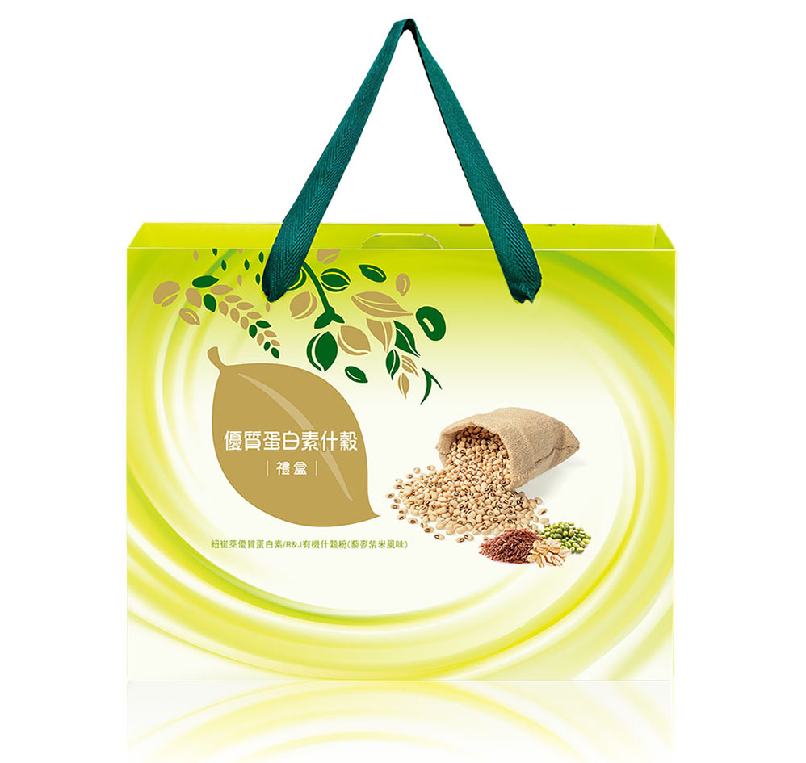

產品介紹
紐崔萊優質蛋白素 -
100%純植物性蛋白質，為家人健康打底。
搭配以中醫五行健康概念所設計、
以多種有機穀類與豆類製作的R&J有機什穀粉，
口味Level UP，元氣滿點！

詳細資訊
- 紐崔萊優質蛋白素 - 全植物配方：450g
- R&J有機什穀粉（藜麥紫米風味）：500g
- 紐崔萊優質蛋白素 - 全植物配方：
請使用所附量匙，盛滿一平匙的紐崔萊優質蛋白素加入225毫升的水或其他飲料，如：牛奶、果汁、豆漿、優酪乳中攪勻。亦可隨意添加糖或調味品，攪勻或將容器加蓋搖勻後即可飲用。若以新鮮水果，如香蕉、草莓等，加於前述飲料中攪拌成稠汁飲用，更加美味可口且營養豐富。
- R&J有機什穀粉（藜麥紫米風味）：
將2匙有機穀粉倒入杯中，加入200c.c.溫水攪拌均勻後即可享用，或者也可依照個人喜好度調整水量多寡
- 紐崔萊優質蛋白素 - 全植物配方：2年
- R&J有機什穀粉（藜麥紫米風味）：360天
- 紐崔萊優質蛋白素 - 全植物配方：
- 一歲以下之嬰兒請勿餵食本食品。
- 本食品不含糖份、化學色素、人工香料或防腐劑。
- 請蓋緊罐蓋，並貯放於24℃以下陰涼乾燥處。
- 為達營養均衡，本品請勿單獨使用。
- R&J有機什穀粉（藜麥紫米風味）：
- 打開鋁箔封膜時，以緩慢、穩定側拉的方式， 即可順利完成
- 確保產品品質，産品開封後請存放於陰涼乾燥處或冷藏
- 本產品含有含麩質之穀物及大豆製品
- 紐崔萊優質蛋白素 - 全植物配方：
分離大豆蛋白、小麥蛋白、豌豆蛋白、大豆卵磷脂、二氧化矽。
- R&J有機什穀粉（藜麥紫米風味）：
有機黑糯糙米粉（紫米）（台灣）、有機糙米粉（台灣）、有機大燕麥片（芬蘭）、有機紅豆粉（台灣）、有機藜麥粉（台灣）、有機大麥粉（台灣）、有機黑豆粉（台灣）、有機綠豆粉（台灣）、有機小米粉（台灣）、有機黃豆粉（台灣）